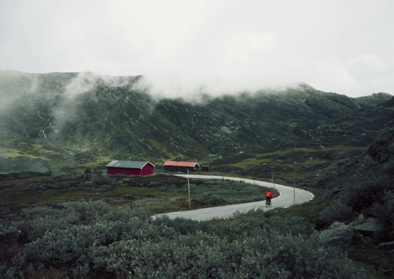
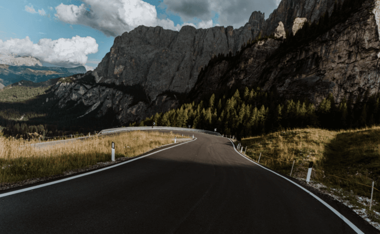
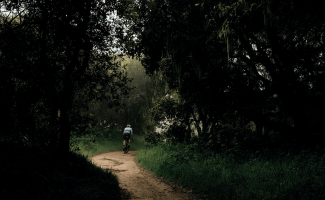
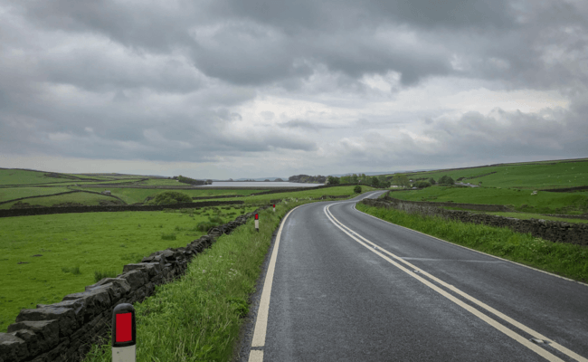
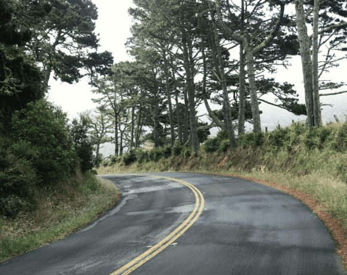

Шоссе, ТТ и Грэвел
Триатлонные старты, горные серпантины или грейвел заезды по живописным маршрутам — нужно только определиться с выбором велосипеда и отправиться в путь.
Cannondale Systemsix
«Катайся много или мало, долго или коротко, как хочешь — но катайся»
- 
- 
- 
Велосипеды
Тренировки
Чтобы найти маршрут для тренировки можно воспользоваться сервисом Komoot, а записать эти тренировки поможет приложение Strava, а также это приложение позволит построить тренировочный план.
